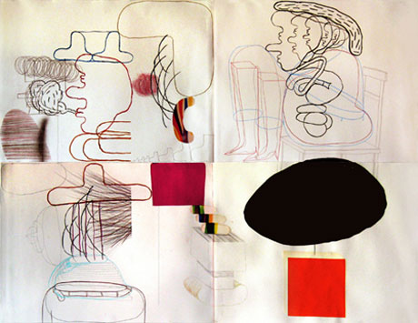

exhibition archive |
||
|  | ||
| < | ||
He looked at her
|
The Wild Project, is pleased to present He looked at her, She looked at it, It looked back, an installation of works on paper by Leif Parsons. Parsons’ follows a simple set of rules when drawing: “If one is interested, concentrated, and unafraid then it is hard to make a bad mark. If I falter in any one of these things then I stop drawing.” It is this whimsy and spontaneity of arrangements that gives the work a sense of associative narrative. One gesture feeds the next until a loosely constructed story has arisen. Parsons’ free-form work and flattened perspectives, represents his fascination with drawing and sculpture. Inspired by Philip Guston and Saul Steinberg, the fragmented figures and forms in Parsons’ work collide with one another accessing moments of clarity and spontaneity. Parsons spent his childhood in Toronto, Canada and currently lives in Brooklyn. He has exhibited throughout the United States and in Canada. In 2007 he was selected as ADC Young Gun. His artwork and illustrations have been included in New York Times, New York Times Magazine, Newsweek, New Yorker, Los Angeles Times, Boston Globe, Washington Post, The Walrus, Graphis, Harpers Magazine, BlackBook, J&L Publishing, Broken Wrist Project and Stop Smiling Magazine. The Wild Project, a new environmentally conscious venue for contemporary theater, film, and visual arts, is dedicated to supporting the arts by offering space and resources to emerging artists. The first gallery and theatre space in New York City to have a green roof with numerous varieties of plant species, wild project’s programming intends to cultivate a supportive artistic network, explore innovative and thoughtful approaches to art making and by doing so enrich the local community. For more information please contact Hilary Schaffner at 212. 228.1195 or info@thewildproject.com. | |
exhibition archive |
|||
| 2016 | 2015 | 2014 | 2013 |
| 2011 | 2010 | 2009 | 2008 |